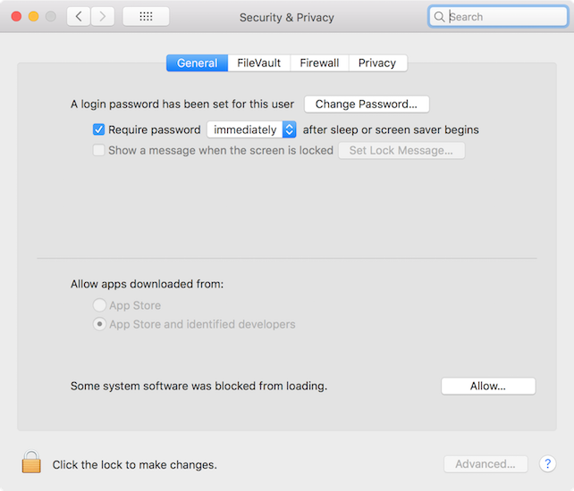

Setting a new Mac for software development
I have experienced a number of different Mac systems, ranging from the old white MacBook 2006 to the MacMini 2010 and MacBook Pro 13” and 15” lately. Time Machine has helped me a lot to transfer data from the old to the new machine. Nevertheless, a lot of changes, mostly for software development, have often been ignored or reset to the defaults due to many reasons (e.g. against security advice, etc.)
In this memo, I jot down a few useful tweaks for my Mac development box so that I can easily reach out instead of searching around again.
System Tweaks
Disable System Integrity Protection (SIP)
System Integration Protection (SIP) is a security technology since OS X El Capitan 10.11 aiming at protecting certain system files and folders against malicious software. SIP even limits the access and actions of the root user account on protected parts of OS X. Unfortunately, the folder /usr needed for installing many development tools and utilities is under protection as well. That makes a lot of tools like Homebrew fail to install. We can easily check SIP’s current status.
$ csrutil status
System Integrity Protection status: enabled.
The tweak I always do right after installing or recovering a Mac is to disable SIP. Just (re)start macOS in Recovery Mode (restarting or turning on your Mac and immediately pressing Cmd + R — shortcut to remember ‘R’ for ‘Recovery’) until macOS boots into its recovery mode. Then open menu Utility > Terminal and execute the following commands.
$ csrutil disable
$ reboot
Your Mac will reboot and get back to the normal working mode. You can verify SIP status again.
$ csrutil status
System Integrity Protection status: disabled.
Disable Gatekeeper
Gatekeeper was first introduced in OS X Mountain Lion. It is a security feature that prevents the users from launching potentially harmful apps. From macOS Sierra and later, however, Apple has made changes to Gatekeeper to even limit furthermore. Users only can see two choices in System Preferences –> Security & Privacy, which are ‘Allow apps downloaded from App Store or App Store and identified developers’. That means only signed apps are allowed to launch, i.e. breaking a lot of useful unsigned apps whose developers cannot afford to pay 99 US$ per membership year for Apple Developer Program.

Nonetheless, Gatekeeper can still be disabled. You do not have to restart macOS but only after executing the following command.
sudo spctl --master-disable

Surely Gatekeeper can be enabled at any time.
sudo spctl --master-enable
Development Tools
Homebrew
Homebrew provides a rich collection of tools I need but Apple does not. Installing Homebrew is super easy.
$ /usr/bin/ruby -e "$(curl -fsSL https://raw.githubusercontent.com/Homebrew/install/master/install)"
After that, I can install a lot of useful development tools like ack, docker, automake, gcc, git, go, maven, mysql, php, python, r, ssh-copy-id, zsh, to name but a few.
There is also a very nice tool, namely, homebrew-bundle, that helps to save time on backing up the current Homebrew’s installation and restoring later. We can do that through Homebrew itself.
# tap the bundle
$ brew tap Homebrew/bundle
# dump all existing Homebrew packages to Brewfile
$ brew bundle dump --force
# check the list of entries
$ brew bundle list
# restore/install all packages from the Brewfile
$ brew bundle